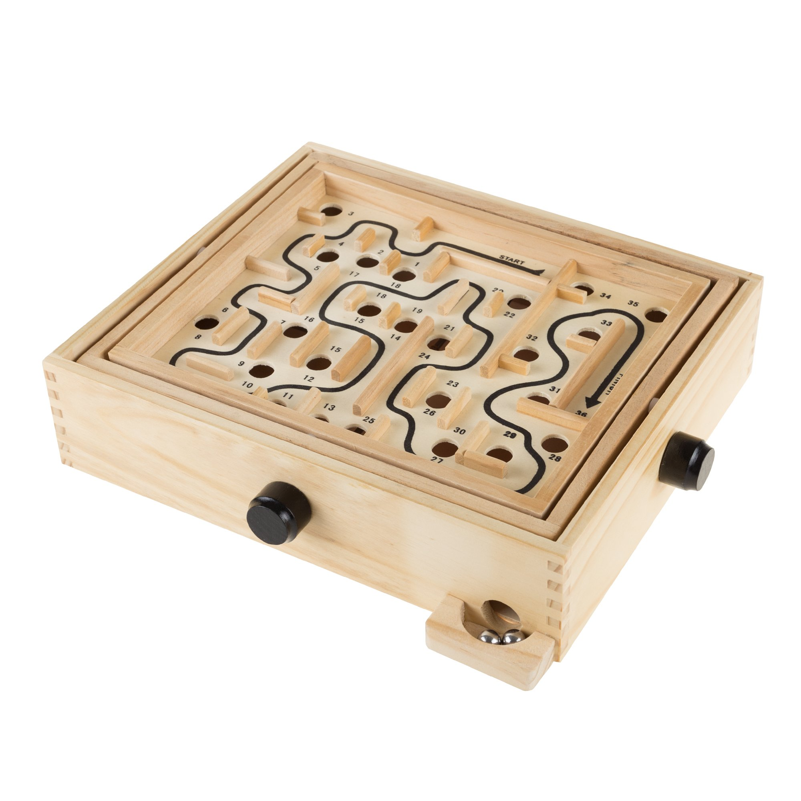
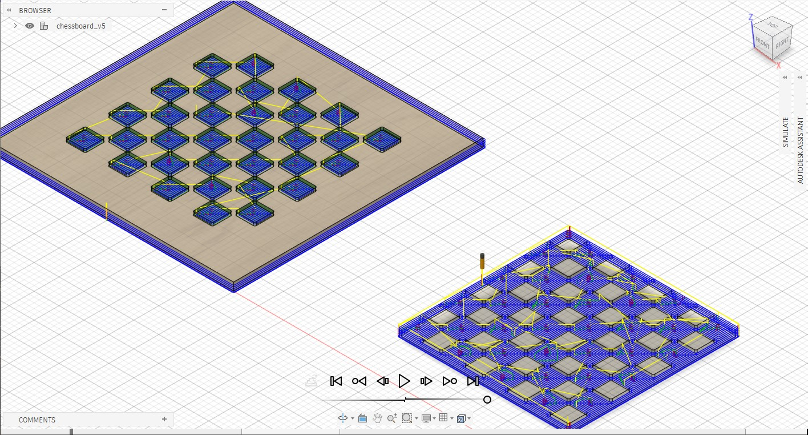
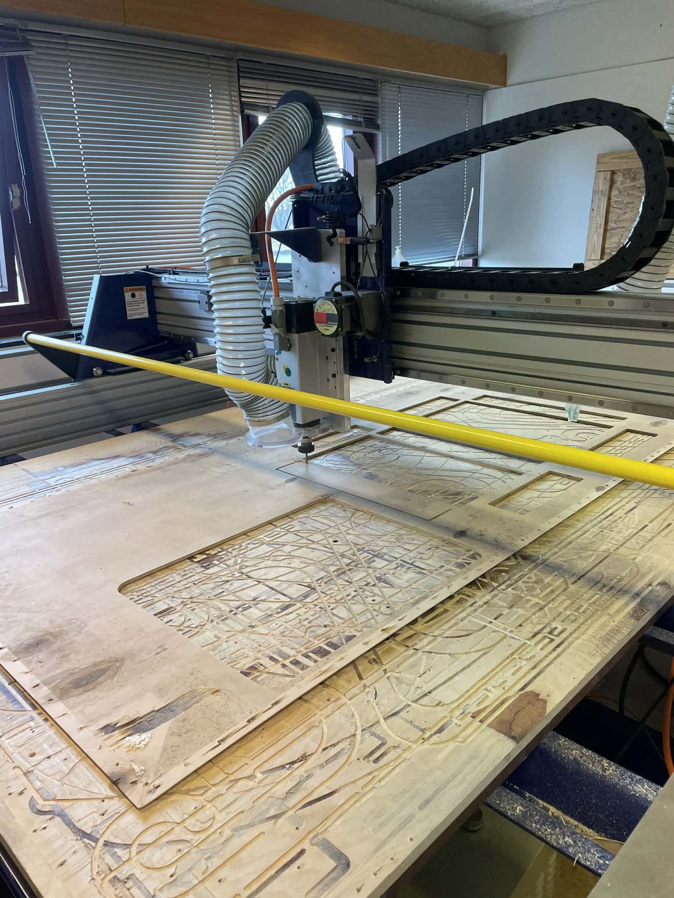
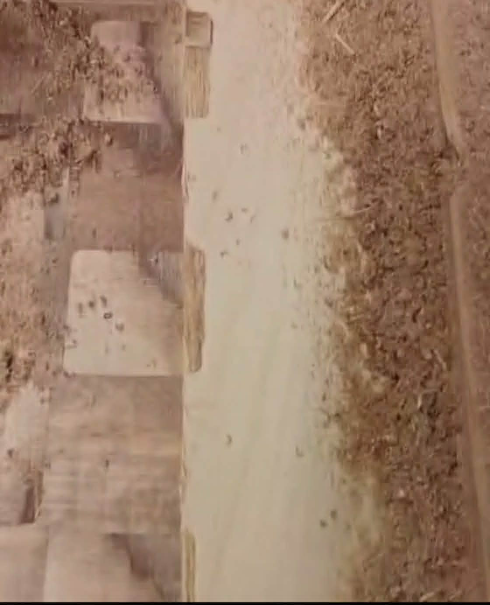
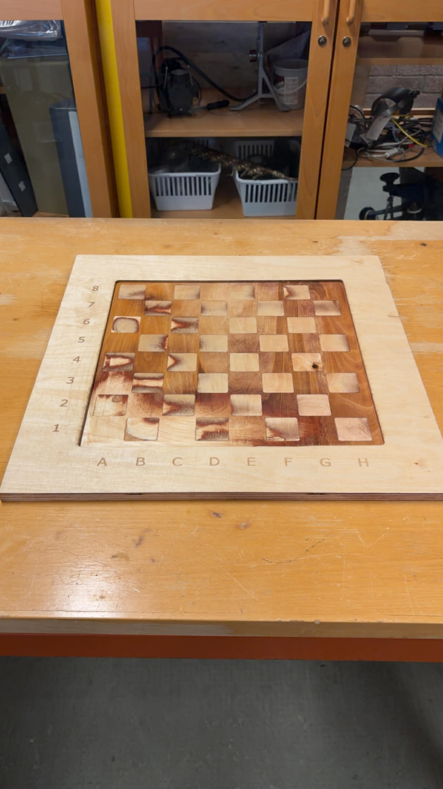

Verkefnalýsing
Lokaverkefni í VÉL608G Tölvustudd framleiðsla. Við erum þriggja manna hópur sem hannar og framleiðir skákborð úr tré með skúffum á hliðunum fyrir skákmennin. Verkefnið nýtir fjölbreytta framleiðsluferla, þar á meðal CNC-fræsingu með Shop Bot, 3D prentun og handavinnu.
Hópmeðlimir
Hafsteinn Ernir
Hlutverk: Aukaverkefni og vefsíðugerð
Haraldur Jóhann
Hlutverk: Hönnun og samsetning á skúffu og botni
Jovan Gajic
Hlutverk: Hönnun á taflborði og vefsíðugerð
Tímalína
| Dagsetning | Áfangi |
|---|---|
| 11. mars | Verkefni hefst |
| 20. apríl | Verkefni lokið |
| 22. apríl | Kynning (5 mín. glærukynning) |
Skipulag
Verkefnastjórnun og Verkskipulag
Gantt-kort
Hér fyrir neðan má sjá Gantt-kortið sem var unnið á vefsíðunni onlinegantt.com:

Tímalína verkefnis
| Vika | Dagsetning | Verkefni | Ábyrgð | Staða |
|---|---|---|---|---|
| 1 | 11.–17. mars | Hugmyndavinna og tillaga | Allir | Lokið |
| 2 | 18.–24. mars | Hönnun í Fusion 360 | Haraldur og Jovan | Lokið |
| 3 | 25.–31. mars | Hönnun lokið, VCarve undirbúningur | Allir | Lokið |
| 4 | 1.–7. apríl | Toolpaths og undirbúningur framleiðslu | Allir | Lokið |
| 5 | 8.–14. apríl | Framleiðsla (fræsing og 3D prentun) | Allir | Lokið |
| 6 | 15.–20. apríl | Frágangur og samsetning | Allir | Lokið |
| — | 22. apríl | Kynning | Allir |
Verkaskipting
| Verkþáttur | Ábyrgðaraðili |
|---|---|
| Hönnun (Fusion 360) | |
| VCarve / Toolpaths | |
| CNC-fræsing | |
| 3D prentun | |
| Samsetning og frágangur | |
| Vefsíða og skjalagerð | |
| Verkefnastjórnun |
Myndbönd um fræsingu frá Fab Lab Akureyri
Hönnun og undirbúningur
Verkefnið byrjaði á hugsunarstormi (e.brainstorm) hjá hópmeðlimum en það var strax ljóst að mesti áhuginn var á að búa til einhverskonar leik. Fyrsta hugmyndin sem kom var að búa til völundarhúsleik með kúlu og hindrunum. Hópmeðlimum leist vel á það en hugmyndin um að gera flott skákborð var erfitt að hunsa þar sem að við höfum allir gaman að skák. Þegar lokaniðurstaða á hugmynd var klár var farið strax í að skipta upp verkefnum og búa til tímaplan sem lesa má hér að ofan.

Efni og verkfæri
Eftir að verkefnaskipulagði var komið fórum við að velja efni fyrir borðið og nota það sem var aðgengilegt. Við vildum að taflborðið sjálft væri úr fínni við þar sem yfirborðið er mest áberandi hluti verkefnisins. Fyrir skúffurnar og botninn var notaður grófari viður sem var einnig til staðar. Við samsetningu var þess gætt að snúa hliðunum sem voru illar farnar inn á við svo þær væru ekki sjáanlegar.
Auk viðar var notað PLA-plast í 3D prentara til að búa til handföng á skúffurnar, sem voru hönnuð í útliti hróks. Til að byrja með ætluðum við að prenta út alla taflmennina en það væri bæði tímafrekt og mikil eyðsla á efni þannig við keyptum frekar tilbúna taflmenn
Taflborðið
Eins og kom fram í verkefnaskipulaginu var það hlutverk Jovans að hanna taflborðið en hlesta áskoruninn var að hvernig best væri að búa til skákreitina. Fyrsta hugmyndin var að mála reitina en allir hópmeðlimir voru sammála að það nýting á Shop Bot vélinni væri þá ekki nóg of góð. Kom þá sú hugmynd að finna tvær plötur fyrir sitthvoran lit, líma þær saman og fræsa af eina plötuna þannig eina sem væri eftir á henni væru reitirnir. Til öryggis var passað að hönnunin yrði parametrísk til að búast við mögulegum breytingum en gert var ráð fyrir að taflborðið yrði 500 mm x 500 mm að stærð og var platan 14.5 mm að Þykkt . Þegar Hönnuninn var klár var sett upp toolpath sem Magnús fór svo yfir fyrir fræsingu.
Skúffa og botn
Á sama tíma var hafist handa við skúffurnar og botninn, og sá Haraldur um þann hluta. Haraldur og Jovan pössuðu upp á að teikningarnar tvær næðu vel saman og, líkt og með taflborðið, var hugað að því að skúffurnar og botninn væru hannaðir með parametrana í huga. Hæð botnsins og skúffanna var 130 mm og þykkt plötunnar 12 mm. Á meðan sá Hafsteinn um að hanna handföngin á skúffurnar, en hermd var eftir efri hlut hróks til að nota sem handföng en þau voru 3D prentuð.
ShopBot-vélin var notuð til að skera út plöturnar og því var sett upp toolpath sem Magnús fór yfir fyrir fræsinguna, rétt eins og gert var með taflborðið.
Fusion 360 og Toolpath
Líkt og í síðustu verkefnum í tölvustuddri framleiðslu var auðveldast að halda áfram að nota Fusion 360 þar sem hópmeðlimir voru orðnir vanir því umhverfi og kennslumyndböndin frá Fab Lab Akureyri fyrir Shop bot voru öll í Fusion. Líkt og í verkefni 2 var notast við manifacture hlutan í Fusion til að búa til toolpath og var fylgt eftir myndbandinu frá Fab lab Akureyri við gerð þess þar sem myndbandið sýndi vel hvernig best væri að fara að því. Hópmeðlimir sáu um að búa til toolpath fyrir hverja hönnun en til öryggis fór Magnús yfir toolpathið til að bæði samstilla með Shop Bot og passa upp á að réttur biti væri fyrir valinu hverju sinni.
Verkfæri og vélar
Við undirbúning fyrir fræsingu voru verkfæraferlar settir upp í Fusion fyrir bæði taflborðið og skúffuna. Sami 6 mm flat biti var notaður í báðum hlutum verkefnisins, en mismunandi ferlar voru valdir eftir því hvort verið var að fjarlægja efni innan úr hlutunum eða skera út útlínur þeirra.
Shop Bot bitar:
| Biti | Þvermál | Tegund | Notaður fyrir |
|---|---|---|---|
| T1 | 6 mm | Flat end mill | Notaður í pocket og 2D contour ferla fyrir taflborð og skúffu |
Verkfæraferlar
Hér fyrir neðan eru helstu verkfæraferlar sem notaðir voru í Fusion. Pocket-ferlarnir voru notaðir til að fræsa út efni innan úr flötum, en 2D contour-ferlarnir voru notaðir til að skera út útlínur hlutanna.
Taflborðið
| Nafn í Fusion | Tegund ferils | Biti | Þvermál | Notaður fyrir |
|---|---|---|---|---|
| Pocket1 | T1 - 6 mm flat | 6 mm | Til að fræsa út efni innan í borðinu og móta yfirborðið samkvæmt hönnun | |
| 2D Contour1 | 2D Contour | T1 - 6 mm flat | 6 mm | Til að skera út útlínur og kanta taflborðsins |
Skúffan
| Nafn í Fusion | Tegund ferils | Biti | Þvermál | Notaður fyrir |
|---|---|---|---|---|
| 2D Contour2 | 2D Contour | T1 - 6 mm flat | 6 mm | Til að skera út útlínur skúffunnar og einstakra hluta hennar |

Framkvæmd
Skúffan
Byrjað var á að vinna skúffurnar þar sem þær þurftu ekki að vera fullkomnar og því hentuðu þær vel til að prófa ShopBot í fyrsta sinn. Þegar Haraldur hafði klárað hönnunina fór Magnús yfir toolpathið í Fusion, passaði að efnið stemmdi og bætti við töppum. Þegar það var klárt var ShopBot-vélin sett í gang. Í byrjun fylgdist Magnús með til að ganga úr skugga um að allt færi rétt fram. Fyrsta platan gekk vel og leit mjög vel út, og eftir það tók Hafsteinn við að fylgjast með ferlinu.
Allir bitar skúffunnar virtust í fyrstu vera mjög vel heppnaðir og tapparnir héldu plötunum á sínum stað. Hins vegar var næst síðasta platan byrjuð að hreyfðast og var því vélin stöðvuð.
Í ljós kom að í stað þess að fara 6 mm niður hafði ShopBot farið 13 mm niður á öllum plötunum, sem gerði það að verkum að þær voru allar lausar. Ástæðan var villa í toolpathinu í Fusion, þar sem botn einnar plötu var í sömu hæð og toppur annarra, sem vélin túlkaði sem 13 mm dýpt. Eftir að þetta var lagað var síðasta platan unnin með töppum og að lokum voru skúffurnar límdar saman með trélími.

Borðið
Þegar skúffan var kláruð fór Jovan með hönnunina sína til Magnúsar sem, líkt og áður, fór yfir toolpathið og setti upp ShopBot-vélina. Byrjað var á að gera prufuplötu sem kom vel út
og því var fræst aftur í fullri stærð. Plöturnar voru síðan límdar saman og yfirborðið fræst þar til skákmynstrið kom í ljós. Við fræsinguna á yfirborðinu komu þó upp tvö atriði. Fyrra atriðið var að ekki hafði verið notað nægilegt lím þegar plöturnar voru límdar saman, sem varð til þess að nokkrir kubbar voru lausir.
Seinna atriðið var að ShopBot-vélin fór ekki nægilega langt út fyrir ramman og því voru endarnir enn tvískiptir. Til að laga það var farin önnur umferð, þar sem aðeins var fræst í kringum ramman til að ná þessu í burtu. Á meðan á því stóð losnaði einn kubbur og skaust í vegginn.

Að lokum var borðið fínpússað og límt alla þá lausu kubba aftur á sinn stað og síðan farið með það í Epilog leysirinn þar sem tölur og bókstafir voru settir á borðið.

Botninn
Á meðan framkvæmdina á borðinu var í gangi var farið í að klára botninn. Þar sem ekki var nægur tími til að nota ShopBot-vélina var botninn handsagaður. Notast var við teikningarnar úr Fusion til að mæla stærðir platnanna og notaði síðan stingsög til að saga þær út. Að lokum var botninn límdur saman með trélími.
Lokasamsetning
Þegar allir hlutir borðsins voru klárir var ekkert eftir nema að setja þá saman. Byrjað var á að líma borðið og botninn saman og á meðan því stóð voru 3D-prentuðu handföngin sett á skúffurnar. Samsetningin gekk vel og þegar allt var komið á sinn stað var verkefnið í raun fullbúið. Að lokum voru taflmennirnir settir á borðið og leikurinn gat hafist.
Niðurstöður
Ferlið gekk mjög vel í heild sinni, þrátt fyrir nokkur minni vandamál sem komu upp á leiðinni. Við lentum meðal annars í villu í toolpathinu sem olli rangri skurðdýpt. Einnig kom í ljós að nota þarf nægilegt magn af trélími til að tryggja að allir hlutar haldist fastir, sérstaklega þegar unnið er með smærri kubba.
Við fengum líka betri tilfinningu fyrir því hvernig ShopBot-vélin vinnur og hversu mikilvægt er að fylgjast vel með henni á meðan keyrslu stendur, þar sem hlutir geta losnað og skapað hættu. Þrátt fyrir þessi atriði gekk verkefnið vel og lokaniðurstaðan góð.